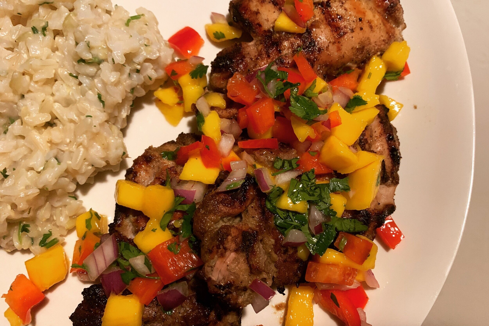

Grilled Jerk Chicken With Mango Salsa
Grilled jerk chicken with mango salsa is a flavorful dish that combines the smoky, spicy, and aromatic flavors of jerk-seasoned chicken with a sweet and refreshing mango salsa.
Jerk cooking is a traditional Jamaican style of cooking that is characterized by a distinctive, flavorful blend of spices, herbs, and cooking techniques.
Its most commonly associated with jerk chicken, but it can be applied to other meats like pork, fish, or even vegetables.
The term "jerk" refers to both the seasoning used to marinate the food and the method of cooking it.

Grilled Jerk Chicken With Mango Salsa
Recipes
Ingredients
Grilled Jerk Chicken
- 4 chicken breast halves with skin and bones (3 pounds), halved crosswise
- 2 1/2 pounds chicken thighs and drumsticks
- 3 scallions, chopped
- 4 large garlic cloves, chopped
- 1 small onion, chopped
- 4 to 5 fresh Scotch bonnet or habanero chiles, stemmed and seeded
- 1/4 cup fresh lime juice
- 3 tablespoons olive oil
- 1 1/2 tablespoons salt
- 1 tablespoon packed brown sugar
- 1 tablespoon fresh thyme leaves
- 2 teaspoons ground allspice
- 2 teaspoons black pepper
- 3/4 teaspoons freshly grated nutmeg
- 1/2 teaspoon cinnamon
Mango Salsa
- 2 mangos, peeled and cut into 1/4-inch dice
- 1 red pepper, diced
- 1/2 red onion, chopped
- 1 small garlic clove, minced
- 2 tablespoons fresh lime juice
- 2 tbsps. chopped cilantro
- 1/2 teaspoon salt
- 1/4 teaspoon black pepper
Preparation
- Blend all marinade ingredients in a blender until smooth.
- Divide chicken pieces and marinade between 2 sealable plastic bags. Seal bags, pressing out excess air, then turn bags over several times to distribute marinade.
Put bags of chicken in a shallow pan and marinate, chilled, turning once or twice, 1 day.
- Let chicken stand at room temperature 1 hour before cooking
- Preheat grill on high, then adjust heat to moderate. Cook chicken until well browned on all sides, 15 to 20 minutes.
Adjust heat to low and cook chicken, covered with lid, until cooked through, about 25 minutes more.
- Mix ingredients together and serve with chicken